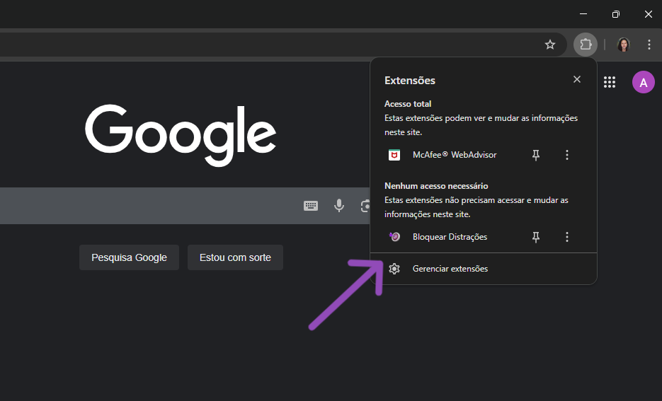
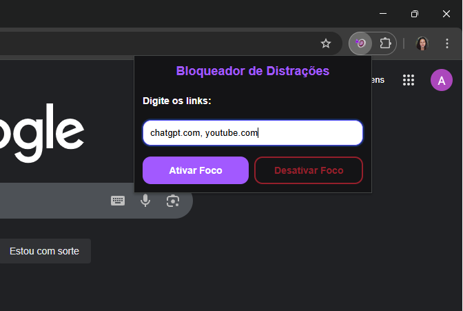
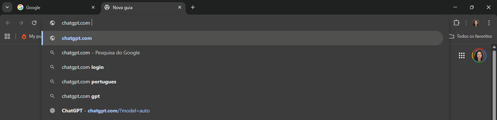
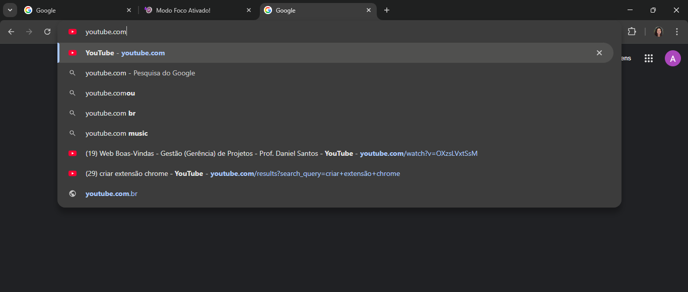
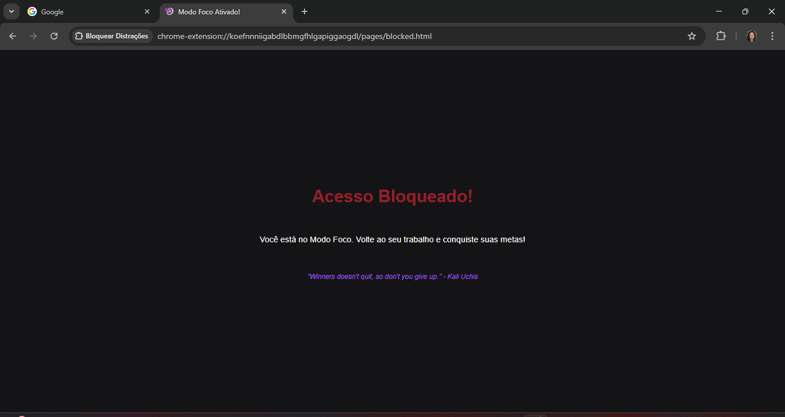

Extensão para o Chrome (Manifest V3) - projeto do Bootcamp II.
Siga estas instruções para carregar a extensão no seu navegador para desenvolvimento e teste:
chrome://extensions.manifest.json.Após a instalação, um novo ícone da extensão aparecerá na sua barra de ferramentas do Chrome.
A extensão "Bloquear Distrações" requer as sequintes permissões para funcionar corretamente:
storage: Permite que a extensão salve e recupere a lista de sites bloqueados e outras
configurações do usuário.tabs: Permite que a extensão detecte e interaja com as abas do navegador, a fim de bloquear o acesso a sites de distrações.Verifique se a extensão aparece no ícone de Extensões do Chrome:
Digite os nomes dos sites que te distraem.
Ative o Modo Foco.
Abra uma nova guia e digite os sites anteriormente digitados na extensão.
 A tela de Bloqueio aparece.
Para desativar a extensão, basta clicar no botão Desativar Foco.
chrome.storage e chrome.tabs.Este projeto está sob a licença MIT License.